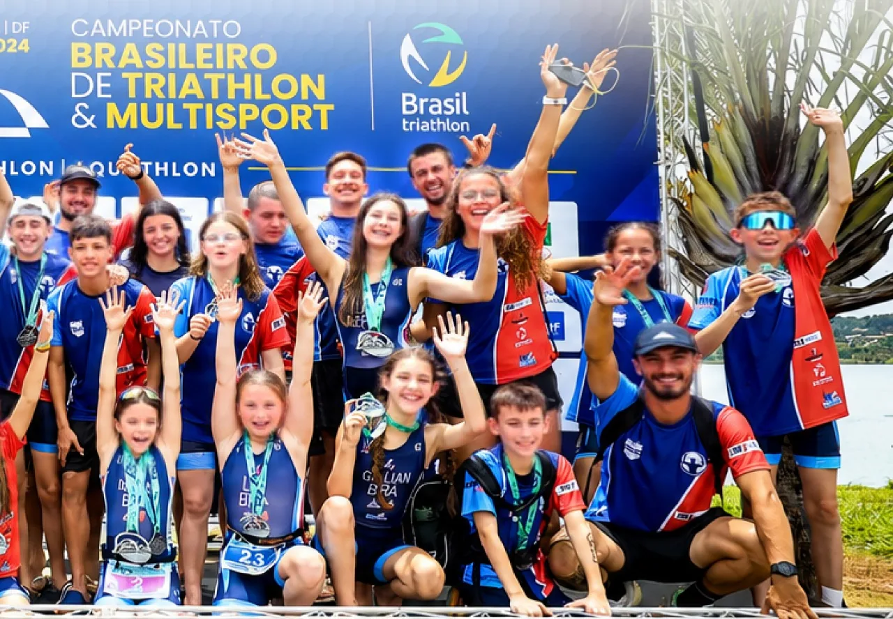
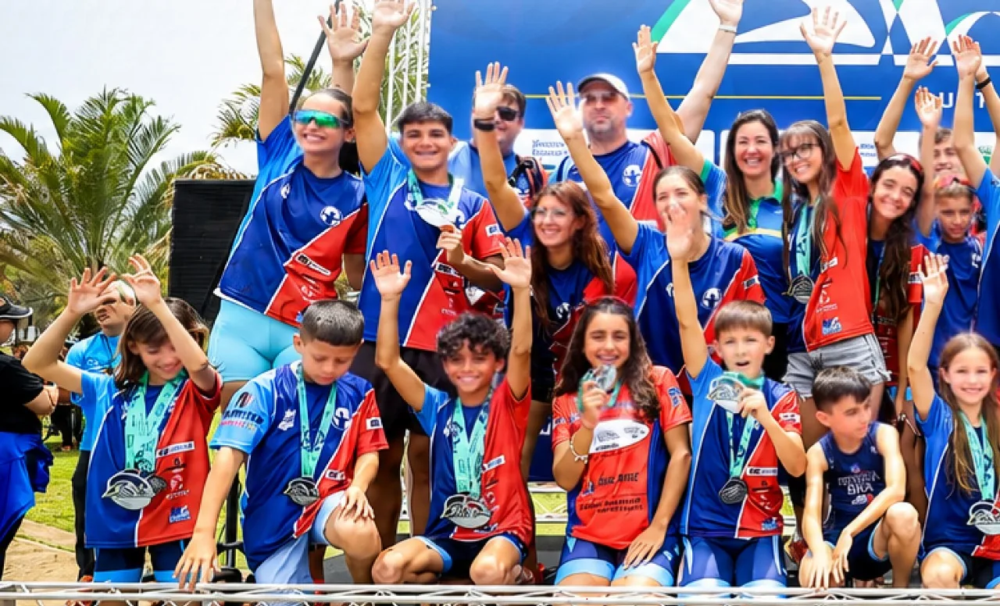
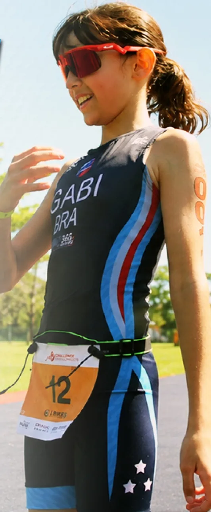
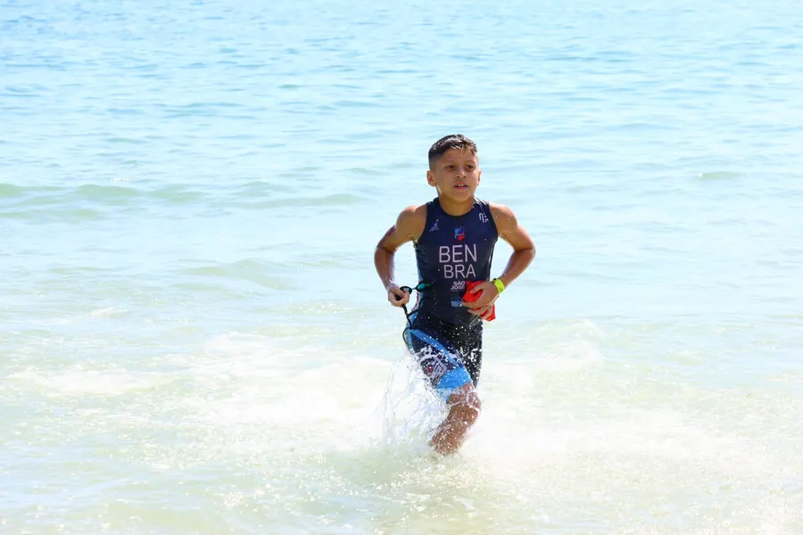
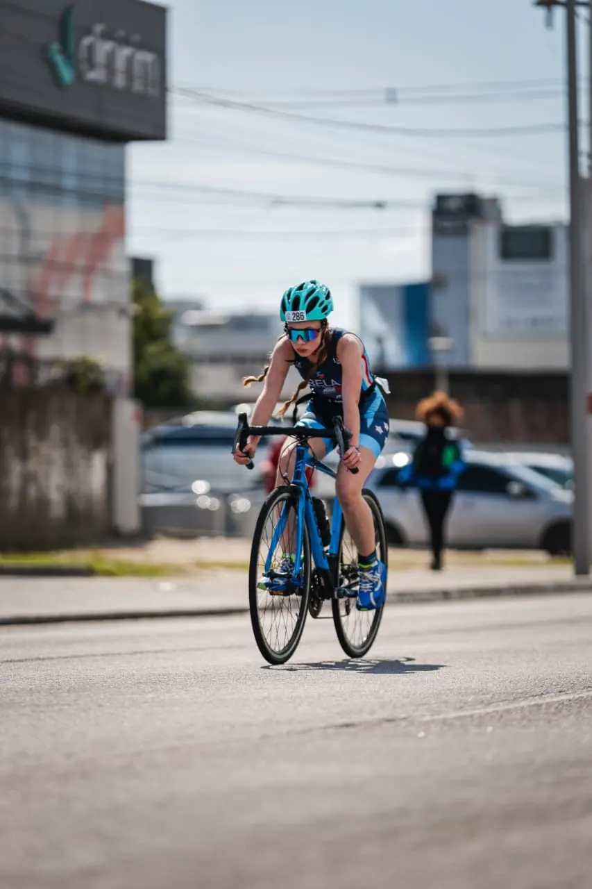
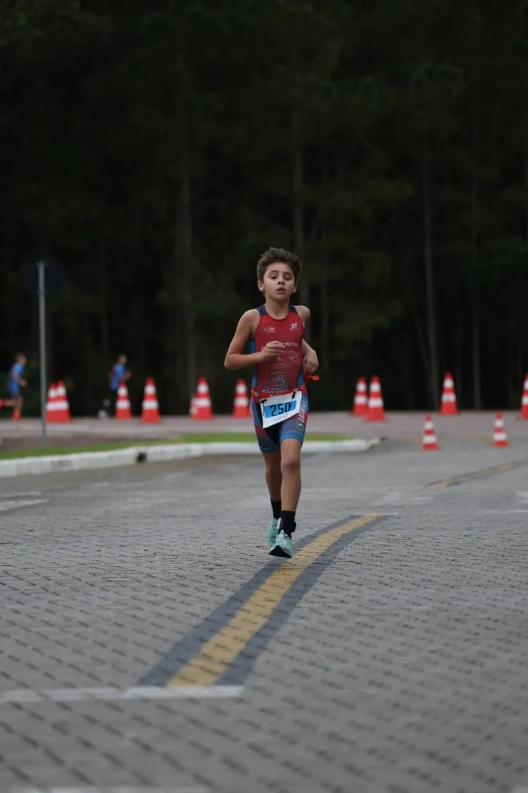
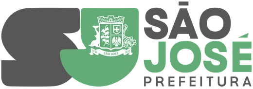

Desde 2002 formando atletas e pessoas através do triathlon em São José. Conheça a nossa história.

Nasceu o Projeto Escolinha de Triathlon, com o objetivo de aproximar crianças e adolescentes do esporte e iniciar uma nova geração de atletas.
A ADTRISC foi criada para fortalecer esse movimento e construir uma trajetória baseada na formação esportiva, no desenvolvimento de talentos e na transformação através do triathlon.
Ao longo dos anos, essa jornada cresceu e passou a acompanhar atletas em diferentes momentos da sua evolução:
Da iniciação ao alto rendimento.
Formando atletas e pessoas através do esporte.
O primeiro contato com o esporte.
Aqui começam as descobertas, o desenvolvimento motor e a paixão pelo triathlon.
Evolução e primeiros desafios competitivos.
Aperfeiçoamento técnico, disciplina e preparação para novas etapas.
Comprometimento, evolução e representação.
Atletas preparados para competir e representar a ADTRISC em diferentes desafios.
Excelência esportiva e busca por resultados.
O nível competitivo de atletas que representam a associação em competições de alto nível.
MUITO MAISQUE
UMAEQUIPE

Estamos sempre formando novos atletas e construindo novos caminhos através do esporte.

As três disciplinas do triathlon organizam a rotina da escolinha, cada uma com seu próprio dia, espaço e cor, como no escudo da ADTRISC.

Sextas-feiras · período vespertino
Aulas de iniciação e aperfeiçoamento em piscina, com foco em técnica e segurança na água.

Terças e quintas · período vespertino
Treinos na orla da Beira Mar de São José, com apoio estrutural da FUNESJ.

Terças e quintas · período vespertino
Mesmo espaço e horário do ciclismo: treino combinado que já introduz a lógica da transição do triathlon.
Atletas ligados à ADTRISC e ao núcleo de São José competindo em nível estadual, nacional e internacional.
Fontes: Prefeitura de São José, Informe Floripa, ND+ e World Triathlon (perfis oficiais de Sofia Gelati e Júlio Monteiro Martins).
Parte do que mantém a escolinha vem de recursos públicos e de incentivo fiscal. Por isso prestamos contas de cada parceria.
Quando há mais inscritos do que vagas, um sorteio público com código aberto decide. Qualquer pessoa pode refazê-lo e chegar ao mesmo resultado.
Ver portal completo →
Estrutura e logística via FUNESJDo formulário ao primeiro treino, em quatro passos.
O formulário fica sempre aberto. O responsável preenche os dados do(a) atleta, escolhe a turma e aceita os termos.
A inscrição fica registrada como candidata e concorre a partir do próximo sorteio daquela turma.
Quando abre vaga, um sorteio público e auditável decide quem entra. A família é avisada do resultado.
Quem é sorteado(a) confirma a matrícula no prazo e entrega a documentação. Depois disso, é só começar!
A escolinha atende crianças e adolescentes de 7 a 15 anos, em turmas por faixa de idade, de manhã ou à tarde, às segundas, quartas e sextas. A pré equipe e a equipe recebem atletas a partir de 11 anos, que seguem a jornada depois da escolinha.
A inscrição e a participação no sorteio são gratuitas.
Os treinos de ciclismo e corrida acontecem na orla da Beira Mar de São José, com apoio da FUNESJ. O local e o horário de cada turma são confirmados na matrícula.
Na inscrição perguntamos se o(a) atleta tem uma bicicleta em condições de uso e segurança (freios funcionando, pedais íntegros). As orientações de equipamento são passadas na matrícula.
Depende da turma: o sorteio acontece quando surgem vagas. Quem não é sorteado(a) vai para a lista de espera e participa automaticamente dos próximos sorteios da mesma turma.
Não. A candidatura é mantida e incluída em todos os sorteios seguintes da turma, sem nova inscrição.
Com um código público: qualquer pessoa pode refazer o sorteio e chegar ao mesmo resultado, e quem participou e quem foi sorteado(a) fica registrado. Ver as regras completas.
A inscrição é permanente e gratuita. Quando surgem vagas, um sorteio público e auditável decide quem entra.